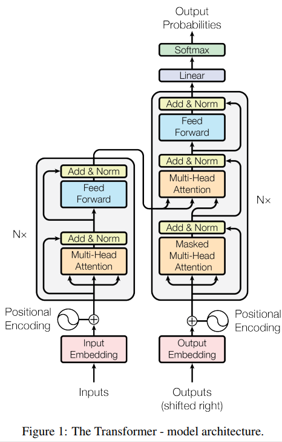
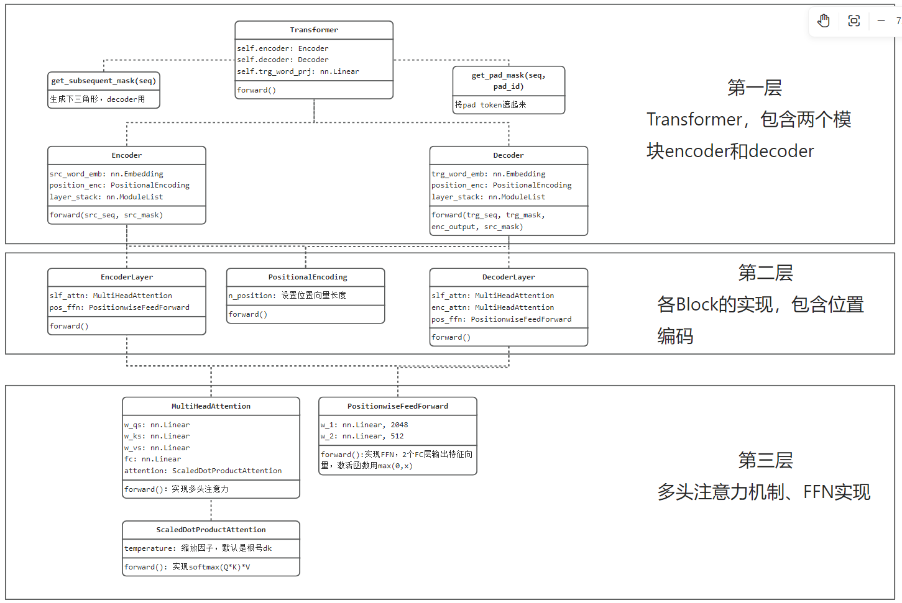
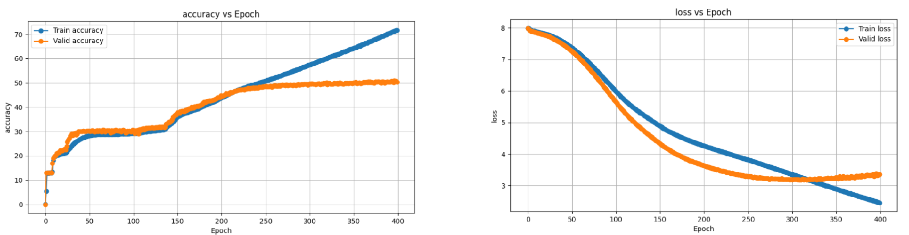
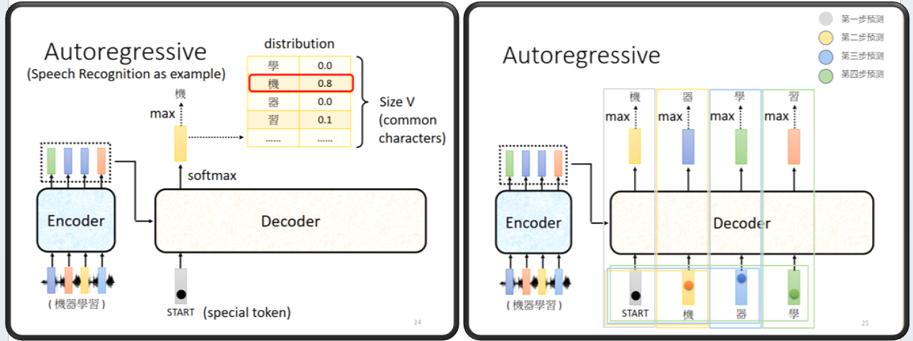

9.4 机器翻译—Transformer
前言
本节将介绍当下人工智能领域的基石与核心结构模型——Transformer，为什么说它是基石，因为以ChatGPT为代表的聊天机器人以及各种有望通向AGI（通用人工智能）的道路上均在采用的Transformer。
Transformer也是当下NLP任务的底座，包括后续的BERT和GPT，都是Transformer架构，BERT主要由Transformer的encoder构成，GPT则主要是decoder构成。
本节将会通读Transformer原论文《Attention is all you need》，总结Transformer结构以及文章要点，然后采用pytorch代码进行机器翻译实验，通过代码进一步了解Transformer在应用过程中的步骤。
论文阅读笔记
Transformer的论文是《Attention is all you need》（https://arxiv.org/abs/1706.03762），由Google团队在2017提出的一种针对机器翻译的模型结构，后续在各类NLP任务上均获取SOTA。
Motivation：针对RNN存在的计算复杂、无法串行的问题，提出仅通过attention机制的简洁结构——Transformer，在多个序列任务、机器翻译中获得SOTA，并有运用到其他数据模态的潜力。
模型结构
模型由encoder和decoder两部分构成，分别采用了6个block堆叠，
- encoder的block有两层，multi-head attention和FC层
- decoder的block有三层，处理自回归的输入masked multi-head attention，处理encoder的attention，FC层。

注意力机制：scale dot-production attention，采用QK矩阵乘法缩放后softmax充当权重，再与value进行乘法。
多头注意力机制：实验发现多个头效果好，block的输出，把多个头向量进行concat，然后加一个FC层。因此每个头的向量长度是总长度/头数，例：512/8=64，每个头是64维向量。
Transformer的三种注意力层：
- encoder：输入来自上一层的全部输出
- decoder-输入：为避免模型未卜先知，只允许看见第i步之前的信息，需要做mask操作，确保在生成序列的每个元素时，只考虑该元素之前的元素。这里通过softmax位置设置负无穷来控制无效的连接。
- decoder-第二个attention：q来自上一步输出，k和v来自encoer的输出。这样解码器可以看到输入的所有序列。
FFN层：attention之后接入两个FC层，第一个FC层采用2048，第二个是512，第一个FC层采用max(0, x)作为激活函数。
embedding层的缩放：在embedding层进行尺度缩放，乘以根号d_model，
位置编码：采用正余弦函数构建位置向量，然后采用加法，融入embedding中。
实验：两个任务，450万句子（英-德），3600万句子（英-法），8*16GB显卡，分别训练12小时，84小时。10万step时，采用4kstep预热；采用标签平滑0.1.
重点句子摘录
- In the Transformer this is reduced to a constant number of operations, albeit at the cost of reduced effective resolution due to averaging attention-weighted positions, an effect we counteract with Multi-Head Attention as described in section 3.2.
由于注意力机制最后的加权平均可能会序列中各位置的细粒度捕捉不足，因此引入多头注意力机制。 这里是官方对多头注意力机制引入的解释。
- \2. We suspect that for large values of dk, the dot products grow large in magnitude, pushing the softmax function into regions where it has extremely small gradients 4. To counteract this effect, we scale the dot products by 根号dk
在Q和K做点积时，若向量维度过长，会导致点积结果过大，再经softmax映射后，梯度会变小，不利于模型学习，因此需要进行缩放。缩放因子为除以根号dk。
多头注意力机制的三种情况：
- encoder：输入来自上一层的全部输出
- decoder-输入：为避免模型未卜先知，只允许看见第i步之前的信息，需要做mask操作，确保在生成序列的每个元素时，只考虑该元素之前的元素。这里通过softmax位置设置负无穷来控制无效的连接。
- decoder-第二个attention：q来自上一步输出，k和v来自encoer的输出。这样解码器可以看到输入的所有序列。
首次阅读遗留问题
位置编码是否重新学习？
不重新学习，详见 PositionalEncoding的 self.register_buffer('pos_table', self._get_sinusoid_encoding_table(n_position, d_hid))
qkv具体实现过程
- 通过3个w获得3个特征向量:
- attn = torch.matmul(q / self.temperature, k.transpose(2, 3)) # q.shape == (bs, n_head, len_seq, d_k/n_head) ，每个token用 一个向量表示，总向量长度是头数*每个头的向量长度。
- attn = self.dropout(F.softmax(attn, dim=-1))
- output = torch.matmul(attn, v)
decoder输入的处理细节
- 训练阶段，无特殊处理，一个样本可以直接输入，根据下三角mask避免未卜先知
- 推理阶段，首先手动执行token的输入，然后for循环直至最大长度，期间输出的token拼接到输出列表中，并作为下一步decoder的输入。选择输出token时还采用了beam search来有效地平衡广度和深度。
数据集构建
数据下载
本案例数据集Tatoeba下载自这里。该项目是帮助不同语言的人学习英语，因此是英语与其它几十种语言的翻译文本。
其中就包括本案例使用的英中文本，共计29668条（Mandarin Chinese - English cmn-eng.zip (29668)）
数据以txt形式存储，一行是一对翻译文本，例如长这样：
1.That mountain is easy to climb. 那座山很容易爬。
2.It's too soon. 太早了。
3.Japan is smaller than Canada. 日本比加拿大小。
数据集划分
对于29668条数据进行8:2划分为训练、验证，这里采用配套代码a_data_split.py进行划分，即可在统计目录下获得train.txt和text.txt。
词表构建
文本任务首要任务是为文本构建词表，这里采用与上节一样的方法，首先对文本进行分词，然后统计语料库中所有的词，最后根据最大上限、最小词频等约束，构建词表。本部分配套代码是b_gen_vocabulary.py
词表的构建过程中，涉及两个知识点：中文分词和特殊token。
1. 中文分词
对于英文，分词可以直接采用空格。而对于中文，就需要用特定的分词方法，这里采用的是jieba分词工具，以下是英文和中文的分词代码。
source.append(parts[0].split(' '))
target.append(list(jieba.cut(parts[1]))) # 分词
2. 特殊token
由于seq2seq任务的特殊性，在解码器部分，通常需要一个token告诉模型，现在是开始，同时还需要有个token让模型输出，以此告诉人类，模型输出完毕，不要再继续生成了。
因此相较于文本分类，还多了bos, eos，两个特殊token，有的时候，开始token也会用start表示。
PAD_TAG = "<pad>" # 用PAD补全句子长度
BOS_TAG = "<bos>" # 用BOS表示开始
EOS_TAG = "<eos>" # 用EOS表示结束
UNK_TAG = "<unk>" # 用EOS表示结束
PAD = 0 # PAD字符对应的数字
BOS = 1 # BOS字符对应的数字
EOS = 2 # EOS字符对应的数字
UNK = 3 # UNK字符对应的数字
运行代码后，词表字典保存到了result目录下，并得到如下输出，表明英文中有2518个词，中文有3365，但经过最大长度3000的截断后，只剩下2996，另外4个是特殊token。
100%|██████████| 23635/23635 [00:00<00:00, 732978.24it/s]
原始词表长度:2518，截断后长度:2518
2522
保存词频统计图:vocab_en.npy_word_freq.jpg
100%|██████████| 23635/23635 [00:00<00:00, 587040.62it/s]
保存统计图:vocab_en.npy_length_freq.jpg
原始词表长度:3365，截断后长度:2996
3000
Dataset编写
NMTDataset的编写逻辑与上一小节的Dataset类似，首先在类初始化的时候加载原始数据，并进行分词；在getitem迭代时，再进行token转index操作，这里会涉及增加结束符、填充符、未知符。
核心代码如下：
def __init__(self, path_txt, vocab_path_en, vocab_path_fra, max_len=32):
self.path_txt = path_txt
self.vocab_path_en = vocab_path_en
self.vocab_path_fra = vocab_path_fra
self.max_len = max_len
self.word2index = WordToIndex()
self._init_vocab()
self._get_file_info()
def __getitem__(self, item):
# 获取切分好的句子list，一个元素是一个词
sentence_src, sentence_trg = self.source_list[item], self.target_list[item]
# 进行填充， 增加结束符，索引转换
token_idx_src = self.word2index.encode(sentence_src, self.vocab_en, self.max_len)
token_idx_trg = self.word2index.encode(sentence_trg, self.vocab_fra, self.max_len)
str_len, trg_len = len(sentence_src) + 1, len(sentence_trg) + 1 # 有效长度， +1是填充的结束符 <eos>.
return np.array(token_idx_src, dtype=np.int64), str_len, np.array(token_idx_trg, dtype=np.int64), trg_len
def _get_file_info(self):
text_raw = read_data_nmt(self.path_txt)
text_clean = text_preprocess(text_raw)
self.source_list, self.target_list = text_split(text_clean)
模型构建
Transformer代码梳理如下图所示，大体可分为三个层级
- Transformer的构建，包含encoder、decoder两个模块，以及两个mask构建函数
- 两个coder内部实现，包括位置编码、堆叠的block
- block实现，包含多头注意力、FFN，其中多头注意力将softmax(QK)*V拆分为ScaledDotProductAttention类。

代码整体与论文中保持一致，总结几个不同之处：
- layernorm使用时机前置到attention层和FFN层之前
- position embedding 的序列长度默认采用了200，如果需要更长的序列，则要注意配置。
具体代码实现不再赘述，把论文中图2的结果熟悉，并掌握上面的代码结构，可以快速理解各模块、组件的运算和操作步骤，如有疑问的点，再打开代码观察具体运算过程即可。
模型训练
原论文进行两个数据集的机器翻译任务，采用的数据和超参数列举如下，供参考。
英语-德语，450万句子对，英语-法语，3600万句子对。均进行base/big两种尺寸训练，分别进行10万step和30万step训练，耗时12小时/84小时。10万step时，采用4千step进行warmup。正则化方面采用了dropout=0.1的残差连接，0.1的标签平滑。
本实验中有2.3万句子对训练，只能作为Transformer的学习，性能指标仅为参考，具体任务后续由BERT、GPT、T5来实现更为具体的项目。
采用配套代码train_transformer.py，执行训练即可：
python train_transformer.py -embs_share_weight -proj_share_weight -label_smoothing -b 256 -warmup 128000 -epoch 400
训练完成后，在result文件夹下会得到日志与模型，接下来采用配套代码c_train_curve_plot.py对日志数据进行绘图可视化，Loss和Accuracy分别如下，可以看出模型拟合能力非常强，性能还在提高，但受限于数据量过少，模型在200个epoch之后就已经出现了过拟合。
这里面的评估指标用的acc，具体是直接复用github项目，也能作为模型性能的评估指标，就没有去修改为BLUE。

模型推理
Transformer的推理过程与训练时不同，值得仔细学习。
Transformer的推理输出是典型的自回归（Auto regressive），并且需要根据多个条件综合判断何时停止，因此推理部分的逻辑值得认真学习，具体步骤如下：
第一步：输入序列经encoder，获得特征，每个token输出一个向量，这个特征会在decoder的每个step都用到，即decoder中各block的第二个multi-head attention。需要enc_output去计算k和v，用decoder上一层输出特征向量去计算q，以此进行decoder的第二个attention。
enc_output, *_ = self.model.encoder(src_seq, src_mask)
第二步：手动执行decoder第一步，输入是这个token，输出的是一个概率向量，由分类概率向量再决定第一个输出token。
self.register_buffer('init_seq', torch.LongTensor([[trg_bos_idx]]))
dec_output = self._model_decode(self.init_seq, enc_output, src_mask)
第三步：循环max_length次执行decoder剩余步。第i步时，将前序所有步输出的token，组装为一个序列，输入到decoder。
在代码中用一个gen_seq维护模型输出的token，输入给模型时，只需要gen_seq[:, :step]即可，很巧妙。
在每一步输出时，都会判断是否需要停止输出字符。
for step in range(2, max_seq_len):
dec_output = self._model_decode(gen_seq[:, :step], enc_output, src_mask)
略
if (eos_locs.sum(1) > 0).sum(0).item() == beam_size:
_, ans_idx = scores.div(seq_lens.float() ** alpha).max(0)
ans_idx = ans_idx.item()
break
借助李宏毅老师2021年课件中一幅图，配合代码，可以很好的理解Transformer在推理时的流程。
输入序列经encoder，获得特征（绿色、蓝色、蓝色、橙色）
decoder输入第一个序列（序列长度为1，token是），输出第一个概率向量，并通过max得到“机”。
decoder输入第二个序列（序列长度为2，token是[BOS, 机]），输出得到“器”
decoder输入第三个序列（序列长度为3，token是[BOS, 机，器]），输出得到“学”
decoder输入第四个序列（序列长度为4，token是[BOS, 机，器，学]），输出得到“习”
...以此类推

在推理过程中，通常还会使用Beam Search 来最终确定当前步应该输出哪个token，此处不做展开。
运行配套代码inference_transformer.py可以看到10条训练集的推理结果。
从结果上看，基本像回事儿了。
src: tom's door is open .
trg: 湯姆 的 門開 著 。
pred: 汤姆 的 <unk> 了 。
src: <unk> is a <unk> country .
trg: <unk> 是 一個 <unk> 的 國家 。
pred: <unk> 是 一個 <unk> 的 城市 。
src: i can come at three .
trg: <unk> 可以 來 。
pred: 我 可以 在 那裡 。
小结
本节通过Transformer论文的学习，了解Transformer基础架构，并通过机器翻译案例，从代码实现的角度深入剖析Transformer训练和推理的过程。由于Transformer是目前人工智能的核心与基石，因此需要认真、仔细的掌握其中细节。
本节内容值得注意的知识点：
多头注意力机制的引入：官方解释为，由于注意力机制最后的加权平均可能会序列中各位置的细粒度捕捉不足，因此引入多头注意力机制
注意力计算时的缩放因子：QK乘法后需要缩放，是因为若向量维度过长，会导致点积结果过大，再经softmax映射后，梯度会变小，不利于模型学习，因此需要进行缩放。缩放因子为除以根号dk。
多头注意力机制的三种情况：
encoder：输入来自上一层的全部输出
decoder-输入：为避免模型未卜先知，只允许看见第i步之前的信息，需要做mask操作，确保在生成序列的每个元素时，只考虑该元素之前的元素。这里通过softmax位置设置负无穷来控制无效的连接。
- decoder-第二个attention：q来自上一步输出，k和v来自encoer的输出。这样解码器可以看到输入的所有序列。
输入序列的msk：代码实现时，由于输入数据是通过添加来组batch的，并且为了在运算时做并行运算，因此需要对src中是pad的token做mask，这一点在论文是不会提及的。
decoder的mask：根据下三角mask避免未卜先知。
推理时会采用beam search进行搜索，确定输出的token。